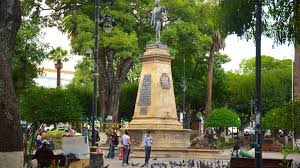
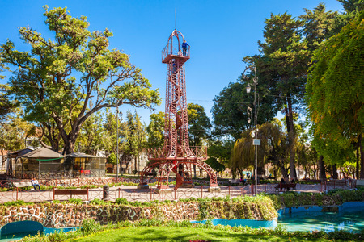

Mi ciudad es bonita y tambien cuenta con zonas turisticas bonitas como por ejemplo la plaza 25 de mayo donde como dato curioso se dio el primer grito libertario la cual inicio la revolucion en el departamento.

O tambien tenemos la torre que podemos decir que tiene un parecido con la torre eiffel, aunque tambien se dice que fue traida desde paris aunque es una verdad a medias ya que si fue traida pero los materiales vienen de paris y que inicialmente se usaba como una torre meteorologica.

Solo son algunos a destacar de muchos que hay pero estos me llaman la atencion por su historia u curiosidades.
Volver